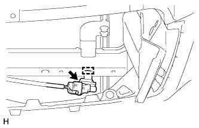

ДАТЧИК ТЕМПЕРАТУРЫ ОКРУЖАЮЩЕГО ВОЗДУХА > УСТАНОВКА |
| 1. УСТАНОВИТЕ ТЕРМИСТОР СИСТЕМЫ КОНДИЦИОНИРОВАНИЯ (ДАТЧИК ТЕМПЕРАТУРЫ ОКРУЖАЮЩЕГО ВОЗДУХА) |
|  |
Установите датчик и закрепите его зажимом.
Подсоедините разъем.
| 2. УСТАНОВИТЕ РЕШЕТКУ РАДИАТОРА |
Установите решетку радиатора (Нажмите здесь).
| 3. УСТАНОВИТЕ ВЕРХНЕЕ УПЛОТНЕНИЕ КРОНШТЕЙНА РАДИАТОРА |
Установите верхнее уплотнение кронштейна радиатора и закрепите его 13 фиксаторами.